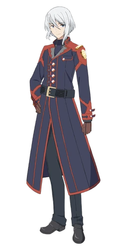

Profil
Lay Glanzudlii (レイ・グランズドリィ, Rei Guranzudori?) adalah anggota Cohort of Chaos, umumnya dikenal sebagai Demon Swordmaster (錬魔の剣聖 Renma no Kensei?) dan murid pindahan di Akademi Raja Iblis. Dia adalah reinkarnasi dari Pahlawan Kanon, yang mengambil identitas Raja Iblis fiksi Avos Dilhevia dengan tujuan mati untuk meredakan kebencian umat manusia terhadap iblis.
Penampilan
Lay adalah seorang pria muda dengan rambut putih sebahu dan mata biru. Lay memakai versi jas panjang dari seragam Akademi Raja Iblis, karena seragamnya terdiri dari warna hitam dan merah seperti kebanyakan seragam untuk siswa berdarah murni. Pakaiannya terdiri dari seragamnya (yang dikelilingi sabuk hitam, serta lencana di bahu kirinya), celana hitam, dan sepatu.
Kepribadian
Lay adalah orang yang lembut, ramah, dan santai. Meskipun dia adalah iblis darah murni yang kuat, dia tidak memiliki kesombongan yang ditunjukkan oleh bangsawan lain dan sangat baik kepada semua orang, termasuk iblis hibrida. Dia tidak setuju dengan doktrin royalis, tapi pada saat yang sama, dia tidak tertarik untuk bergabung dengan Unitarian. Meski bersimpati dengan tujuan mereka dan bersahabat dengan beberapa anggota, Lay menganggap hal seperti itu merepotkan dan hanya ingin menikmati hidup damai. Misa menyatakan bahwa dia mungkin merupakan cita-cita visi Unitarian, karena dia tidak mendiskriminasi siapa pun.
Lay sangat menyukai permainan pedang dan terpesona oleh pedang sejak kecil. Namun, bakat alaminya memungkinkan dia memenangkan setiap pertarungan, menyebabkan dia semakin bosan dengan pertarungan, karena dia tidak bisa mengerahkan seluruh kemampuannya dan melawan lawan yang kuat. Namun hal ini berubah ketika dia bertemu kembali dengan Anos, yang mendorongnya hingga batas kemampuannya, saat dia menjadi bersemangat untuk pertama kalinya melawan lawan.
Sebagai reinkarnasi dari Pahlawan Kanon, dia masih memiliki keinginan untuk mengakhiri Perang Besar antara manusia dan iblis secara permanen, dan dia rela mengorbankan dirinya untuk mengakhiri kebencian antara dua ras dan melindungi perdamaian. Anos diciptakan, begitu pula Anos diincar manusia untuk membalas dendam.
|  | ||
| Jepang | レイ・グランズドリィ | |
| Romawi | Rei Guranzudori | |
| Alias | Lay Yvesta
Ahli Pedang Iblis Pahlawan Kanon |
|
| Ras | Iblis | |
| Usia | 15 tahun | |
| Negara | Dilhade | |
| Status | Hidup | |
| Kerabat | Anos Voldigoad (leluhur)
Sheila Grandsley (ibu angkat) Misa Illiorogue (Kekasih) |
|